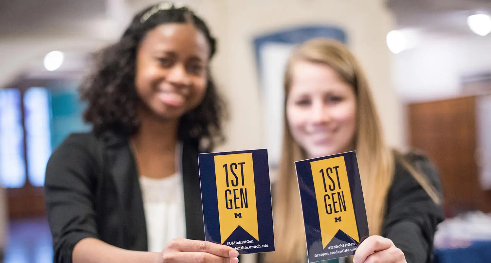

First Generation
Michigan Is Our Home
Did you know there are approximately 4,000 students at the University of Michigan who are among the first generation in their family to attend college? While being the first to do anything can be a bit daunting, going off to college is also a major life milestone.
Thankfully, there are useful networks and programs at U-M that can help you connect and thrive on campus. Use this website to help you find the resources you need. Explore your options. Find your community and your way. Make yourself at home.
Am I a first-generation college student?
At the University of Michigan, undergraduates and graduate students are considered first-generation college students if neither parent or guardian has completed a 4-year college or university degree.
This definition includes students with other family members (siblings, cousins, grandparents, etc.) who have completed a four-year degree.
What is the First-Gen Gateway?
The First Generation Student Gateway serves as a starting point to get connected to resources for first-generation students. Housed in the Office of Academic Multicultural Initiatives (OAMI), the Gateway is linked to several partner offices and is a home for support for first-generation students. The Gateway is for all first-generation undergraduate and graduate students and their allies. The Gateway is open during regular business hours (8AM-5PM). You can use the space for:
- Finding resources for first-generation students
- Connecting to partner offices that support first-generation students
- Meet with First Generation Project Manager Terra Molengraff
- Study space
- Meeting space
First-Generation Gateway Hours and Location:
Summer Hours: Monday – Friday 9:00 – 3:00 PM
Location: Third floor of the Student Activities Building in the Office of Academic Multicultural Initiatives.
Questions for the First-Gen Gateway Staff? Email us at firstgeninfo@umich.edu
First-generation student News
Who’s a ‘First-Gen’ Student? Here’s a New Look at a Complicated Question
University of Michigan Celebrates First-Generation College Students During Week-Long Events